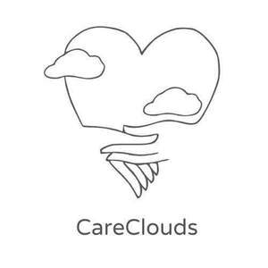

Trade Mark Journal No.2025/046 14 November 2025
UK00004288084 3 November 2025 (41,44)

- Class 41
- Education and training services for carers and health professionals, relating to dementia care, cognitive health, palliative and end of life care; educational services for children who are carers to a family member; provision of online and in-person workshops, seminars and information sessions for carers and families affected by dementia or other health conditions; publication and distribution of educational materials, podcasts and digital resources concerning dementia awareness, emotional wellbeing and community support; organising and hosting community events to promote an understanding of the importance of connection to a person with dementia; advice and therapeutic support for carers, family members and relatives.
- Class 44
- Health care related to therapeutic massage; information and advisory services relating to health, wellbeing and dementia care; provision of non-medical support and guidance for families and carers of individuals living with dementia or other health conditions; emotional support and wellbeing information services provided online, during workshops and via digital platforms; advice and information relating to mental health, elder care and family wellbeing.
Meryl Joanne Dear